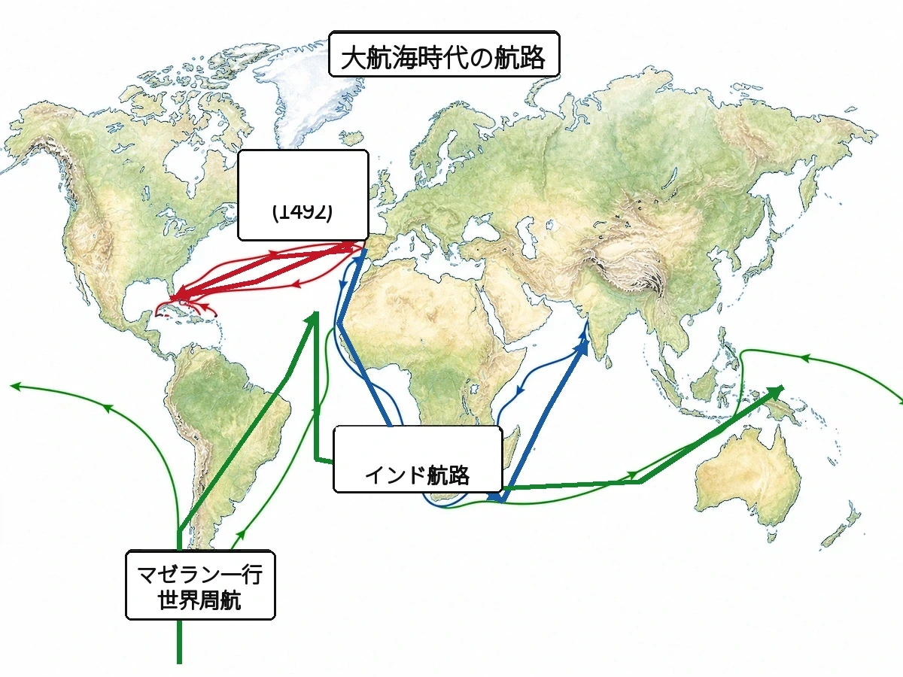

‹ 単元一覧にもどる
歴史 ⑦問題集
ヨーロッパと天下統一
ルネサンス 〜 安土桃山時代
 いっしょに
いっしょにがんばろう！
💡タブか下のリストから単元を選ぼう！
やり方（おすすめ順・穴埋め・一問一答・4択・記述）は単元を開いてから選べるよ。
📖 参考書を開く
やり方（おすすめ順・穴埋め・一問一答・4択・記述）は単元を開いてから選べるよ。
年
年表でチェック
（ ）をタップすると答えが出るよ。まずは自分で言ってから確かめよう！
| 年代 | できごと |
|---|---|
| 1453年 | がビザンツ帝国を滅ぼす |
| 1492年 | がカリブ海の島に到達する |
| 1498年 | がインドに到達する |
| 1517年 | がを始める |
| 1522年 | が世界一周を達成する |
| 1543年 | ポルトガル人により種子島にが伝わる |
| 1549年 | が来日しキリスト教を伝える |
| 1560年 | 織田信長がで今川義元を破る |
| 1571年 | 信長がを焼き討ちにする |
| 1573年 | 信長が足利義昭を追放しを滅ぼす |
| 1575年 | 信長・家康連合軍がで武田勝頼を破る |
| 1582年 | 明智光秀がで信長を倒す |
| 1588年 | 秀吉が百姓から武器を取り上げるを行う |
| 1590年 | 秀吉がを滅ぼし全国統一を達成する |
| 1592年 | 秀吉が朝鮮に出兵する（） |
| 1598年 | 秀吉が死去し、日本軍が朝鮮から撤退する |
1
ヨーロッパの変革
▶やり方をえらぼう目次にもどれば何度でも変えられるよ
解答
採点
順番
順番
A要点まとめ（ ）をタップして確かめよう
📖 先に参考書で理解する
西ヨーロッパではを頂点とするが大きな権威を持っていた。11世紀末、教皇の呼びかけで聖地エルサレムの奪還を目指すが約200年にわたり派遣されたが失敗に終わり、かえって教皇の権威は低下し、東西の交流が活発になった。14世紀のイタリアでは、古代の文化を見直し人間らしさを表現するが始まり、「モナ・リザ」を描いたらが活躍した。1517年、は免罪符の販売を批判してを始め、教会に抗議するが生まれた。カトリック教会側もをつくって巻き返しをはかった。このころ発明されたによって書物が安く広まり、知識の普及が加速した。
B一問一答1 / 14
カトリック教会の頂点に立ち、西ヨーロッパで大きな権威を持った人物は？
📖 解説を読む（ヒント）
ローマ教皇
カトリック教会の頂点に立つ最高位の聖職者で、西ヨーロッパ各国の国王にも強い影響力を持った宗教的指導者。
B一問一答4 / 14
7世紀にアラビア半島で成立し、西アジア・北アフリカへ広がった宗教は？
📖 解説を読む（ヒント）
イスラム教
7世紀にムハンマドがアラビア半島で開いた一神教。信者はムスリムと呼ばれ、西アジア・北アフリカへ広がった。
B一問一答5 / 14
イスラム教徒のこと、インド洋交易で重要な役割を果たしたのは？
📖 解説を読む（ヒント）
ムスリム
イスラム教徒を指す呼び名で、民族名ではなく宗教上の呼称。インド洋交易で大きな役割を果たした。
B一問一答6 / 14
ローマ教皇の呼びかけで聖地エルサレム奪還のため派遣された遠征軍は？
📖 解説を読む（ヒント）
十字軍
11世紀末から約200年続いた遠征。聖地奪還には失敗したが、東西交流を活発にし教皇の権威が低下した。
B一問一答7 / 14
古代ギリシャ・ローマ文化を見直し、人間らしさを表現しようとした文化運動は？
📖 解説を読む（ヒント）
ルネサンス
「文芸復興」ともいう。14世紀にイタリアで始まり、人間中心の文化として西欧に広がった。
B一問一答8 / 14
16世紀にルターやカルバンがカトリック教会を批判して始めた改革は？
📖 解説を読む（ヒント）
宗教改革
1517年、ルターの免罪符販売批判をきっかけに始まり、プロテスタントが生まれカトリックから分かれた。
B一問一答9 / 14
ルターが批判した、買えば罪が許されるとされた札は？
📖 解説を読む（ヒント）
免罪符（贖宥状）
ローマ教会がサン・ピエトロ大聖堂の資金集めなどに販売した札。ルターはこの販売を批判して宗教改革を始めた。
B一問一答10 / 14
ドイツで宗教改革を始め、聖書を信仰の中心とした人物は？
📖 解説を読む（ヒント）
ルター
1517年に「95か条の論題」を発表してカトリック教会の権威に抗議し、ドイツで宗教改革を始めた人物。
B一問一答12 / 14
ルターやカルバンの考えを支持した新しいキリスト教勢力は？
📖 解説を読む（ヒント）
プロテスタント
「抗議する者」が語源。ルターやカルバンを支持しカトリック教会に抗議した、宗教改革による新教徒の総称。
B一問一答13 / 14
カトリック教会側が宗教改革に対抗して作った組織は？
📖 解説を読む（ヒント）
イエズス会
宗教改革に対抗してカトリック側がつくった団体。アジアにも宣教師を送り、ザビエルもこの一員だった。
B一問一答14 / 14
ルネサンス期に発明され、知識の普及を加速した技術は？
📖 解説を読む（ヒント）
活版印刷
15世紀にドイツのグーテンベルクが実用化し、書物が安く大量に作れるようになり知識の普及を加速させた。
B一問一答全14問・まとめて採点
まず全部の問題にこたえてから、下のボタンでまとめて答え合わせしよう！
(1)カトリック教会の頂点に立ち、西ヨーロッパで大きな権威を持った人物は？
ローマ教皇
カトリック教会の頂点に立つ最高位の聖職者で、西ヨーロッパ各国の国王にも強い影響力を持った宗教的指導者。
(2)ローマ教皇を中心とするキリスト教の宗派は？
カトリック教会
ローマ教皇を頂点に西ヨーロッパで広まったキリスト教の宗派。東欧の正教会と区別する。
(3)ビザンツ帝国と結びついたキリスト教の宗派は？
正教会
ビザンツ帝国と結びつき東ヨーロッパで広まった宗派で、ローマ教皇の権威を認めない独自の教会。
(4)7世紀にアラビア半島で成立し、西アジア・北アフリカへ広がった宗教は？
イスラム教
7世紀にムハンマドがアラビア半島で開いた一神教。信者はムスリムと呼ばれ、西アジア・北アフリカへ広がった。
(5)イスラム教徒のこと、インド洋交易で重要な役割を果たしたのは？
ムスリム
イスラム教徒を指す呼び名で、民族名ではなく宗教上の呼称。インド洋交易で大きな役割を果たした。
(6)ローマ教皇の呼びかけで聖地エルサレム奪還のため派遣された遠征軍は？
十字軍
11世紀末から約200年続いた遠征。聖地奪還には失敗したが、東西交流を活発にし教皇の権威が低下した。
(7)古代ギリシャ・ローマ文化を見直し、人間らしさを表現しようとした文化運動は？
ルネサンス
「文芸復興」ともいう。14世紀にイタリアで始まり、人間中心の文化として西欧に広がった。
(8)16世紀にルターやカルバンがカトリック教会を批判して始めた改革は？
宗教改革
1517年、ルターの免罪符販売批判をきっかけに始まり、プロテスタントが生まれカトリックから分かれた。
(9)ルターが批判した、買えば罪が許されるとされた札は？
免罪符（贖宥状）
ローマ教会がサン・ピエトロ大聖堂の資金集めなどに販売した札。ルターはこの販売を批判して宗教改革を始めた。
(10)ドイツで宗教改革を始め、聖書を信仰の中心とした人物は？
ルター
1517年に「95か条の論題」を発表してカトリック教会の権威に抗議し、ドイツで宗教改革を始めた人物。
(11)スイスで宗教改革を進めた人物は？
カルバン
ルターとともに新教を広めた人物。よく働き、ぜいたくをしない生き方を説き、商工業者に支持された。
(12)ルターやカルバンの考えを支持した新しいキリスト教勢力は？
プロテスタント
「抗議する者」が語源。ルターやカルバンを支持しカトリック教会に抗議した、宗教改革による新教徒の総称。
(13)カトリック教会側が宗教改革に対抗して作った組織は？
イエズス会
宗教改革に対抗してカトリック側がつくった団体。アジアにも宣教師を送り、ザビエルもこの一員だった。
(14)ルネサンス期に発明され、知識の普及を加速した技術は？
活版印刷
15世紀にドイツのグーテンベルクが実用化し、書物が安く大量に作れるようになり知識の普及を加速させた。
E資料問題写真を見て答えよう

(1)地図中で、大西洋を横断して1492年にアメリカ大陸付近に到達した航路を進んだ人物はだれか。
(2)地図中で、アフリカ南端の喜望峰を回ってインドに達した航路を開いた人物はだれか。

2
大航海時代
▶やり方をえらぼう目次にもどれば何度でも変えられるよ
解答
採点
順番
順番
A要点まとめ（ ）をタップして確かめよう
📖 先に参考書で理解する
15世紀以降、香辛料やキリスト教の布教を求めたヨーロッパ人は新しい航路を開いて世界各地へ進出するを迎えた。1498年、ポルトガル人のはアフリカ南端を回ってインドに到達し、インド航路を開いた。1492年にはがスペインの支援で大西洋を横断しカリブ海の島に到達したが、本人は最後までアジアに着いたと信じていた。1522年にはが世界一周を達成し、地球が丸いことが証明された。スペインは中南米に進出し、ピサロがを、コルテスがをそれぞれ滅ぼして広大な植民地を築いた。ヨーロッパ・アフリカ・アメリカ大陸を結ぶでは、多くのアフリカ人がとしてアメリカ大陸へ送られた。また、オランダはを設立してアジアの香辛料貿易で大きな利益を上げた。
B一問一答1 / 14
ヨーロッパ人が新しい航路を開き、世界各地へ進出した時代は？
📖 解説を読む（ヒント）
大航海時代
15世紀以降、香辛料やキリスト教布教を求めてヨーロッパ人が新航路を開き、世界各地へ進出した時代。
B一問一答2 / 14
アフリカ南端を回ってインドに到達したポルトガル人は？
📖 解説を読む（ヒント）
バスコ・ダ・ガマ
1498年にアフリカ南端の喜望峰を回ってインドに到達し、ヨーロッパからのインド航路を開いたポルトガル人。
B一問一答3 / 14
スペインの支援を受け、大西洋を横断してカリブ海の島に到達した人物は？
📖 解説を読む（ヒント）
コロンブス
1492年にスペインの支援で大西洋を西に横断しカリブ海の島に到達したが、本人は最後までアジアに着いたと信じていた。
B一問一答4 / 14
1522年に世界一周を達成した船隊を率いていた人物は？
📖 解説を読む（ヒント）
マゼランの船隊
スペイン国王の援助で出航。マゼラン本人はフィリピンで死亡したが、残った船隊が1522年に世界一周を完成させた。
B一問一答5 / 14
ヨーロッパ・アフリカ・アメリカ大陸を結んだ貿易は？
📖 解説を読む（ヒント）
三角貿易
ヨーロッパが武器をアフリカへ運び、アフリカから人々を奴隷としてアメリカ大陸へ強制的に送った貿易のしくみ。
B一問一答6 / 14
オランダなどがアジア貿易のために作った会社は？
📖 解説を読む（ヒント）
東インド会社
オランダが17世紀初めに作った、アジア貿易を独占する会社。香辛料などの貿易で大きな利益を上げた。
B一問一答7 / 14
欧州人が求めた高価なアジアの産物は？
📖 解説を読む（ヒント）
香辛料
コショウなどの香辛料は肉の保存・調味に使われ、ヨーロッパでは金と同等の価値を持ち大航海時代の動機となった。
B一問一答8 / 14
スペインが滅ぼした南米の帝国は？
📖 解説を読む（ヒント）
インカ帝国
南米ペルーを中心に栄えた帝国で、マチュピチュなどの遺跡で知られる。16世紀にスペインのピサロに征服された。
B一問一答9 / 14
スペインが滅ぼしたメキシコの帝国は？
📖 解説を読む（ヒント）
アステカ帝国
メキシコ高原に栄えた帝国で、テノチティトランを首都とした。16世紀にスペインのコルテスに征服された。
B一問一答10 / 14
バスコ・ダ・ガマを支援しインド航路を開拓した国は？
📖 解説を読む（ヒント）
ポルトガル
スペインとともに大航海時代を先導した国。バスコ・ダ・ガマを支援してインド航路を開き、アジアに多くの拠点を築いた。
B一問一答11 / 14
コロンブスを支援しアメリカ大陸に進出した国は？
📖 解説を読む（ヒント）
スペイン
コロンブスを支援してアメリカ大陸に進出。アステカ帝国やインカ帝国を征服し、中南米に広大な植民地を築いた国。
B一問一答12 / 14
コロンブスがカリブ海の島に到達した年は？
📖 解説を読む（ヒント）
1492年
コロンブスがスペインの支援で大西洋を西回りに横断し、カリブ海の島（サン・サルバドル島）に到達した年。
B一問一答13 / 14
バスコ・ダ・ガマがインドに到達した年は？
📖 解説を読む（ヒント）
1498年
ポルトガル人バスコ・ダ・ガマがアフリカ南端の喜望峰を回り、ヨーロッパからのインド航路を開拓した年。
B一問一答14 / 14
マゼランの船隊が世界一周を達成した年は？
📖 解説を読む（ヒント）
1522年
マゼランの船隊がスペインへ帰還し世界一周を完成させた年。これにより地球が丸いことが実際に証明された。
B一問一答全14問・まとめて採点
まず全部の問題にこたえてから、下のボタンでまとめて答え合わせしよう！
(1)ヨーロッパ人が新しい航路を開き、世界各地へ進出した時代は？
大航海時代
15世紀以降、香辛料やキリスト教布教を求めてヨーロッパ人が新航路を開き、世界各地へ進出した時代。
(2)アフリカ南端を回ってインドに到達したポルトガル人は？
バスコ・ダ・ガマ
1498年にアフリカ南端の喜望峰を回ってインドに到達し、ヨーロッパからのインド航路を開いたポルトガル人。
(3)スペインの支援を受け、大西洋を横断してカリブ海の島に到達した人物は？
コロンブス
1492年にスペインの支援で大西洋を西に横断しカリブ海の島に到達したが、本人は最後までアジアに着いたと信じていた。
(4)1522年に世界一周を達成した船隊を率いていた人物は？
マゼランの船隊
スペイン国王の援助で出航。マゼラン本人はフィリピンで死亡したが、残った船隊が1522年に世界一周を完成させた。
(5)ヨーロッパ・アフリカ・アメリカ大陸を結んだ貿易は？
三角貿易
ヨーロッパが武器をアフリカへ運び、アフリカから人々を奴隷としてアメリカ大陸へ強制的に送った貿易のしくみ。
(6)オランダなどがアジア貿易のために作った会社は？
東インド会社
オランダが17世紀初めに作った、アジア貿易を独占する会社。香辛料などの貿易で大きな利益を上げた。
(7)欧州人が求めた高価なアジアの産物は？
香辛料
コショウなどの香辛料は肉の保存・調味に使われ、ヨーロッパでは金と同等の価値を持ち大航海時代の動機となった。
(8)スペインが滅ぼした南米の帝国は？
インカ帝国
南米ペルーを中心に栄えた帝国で、マチュピチュなどの遺跡で知られる。16世紀にスペインのピサロに征服された。
(9)スペインが滅ぼしたメキシコの帝国は？
アステカ帝国
メキシコ高原に栄えた帝国で、テノチティトランを首都とした。16世紀にスペインのコルテスに征服された。
(10)バスコ・ダ・ガマを支援しインド航路を開拓した国は？
ポルトガル
スペインとともに大航海時代を先導した国。バスコ・ダ・ガマを支援してインド航路を開き、アジアに多くの拠点を築いた。
(11)コロンブスを支援しアメリカ大陸に進出した国は？
スペイン
コロンブスを支援してアメリカ大陸に進出。アステカ帝国やインカ帝国を征服し、中南米に広大な植民地を築いた国。
(12)コロンブスがカリブ海の島に到達した年は？
1492年
コロンブスがスペインの支援で大西洋を西回りに横断し、カリブ海の島（サン・サルバドル島）に到達した年。
(13)バスコ・ダ・ガマがインドに到達した年は？
1498年
ポルトガル人バスコ・ダ・ガマがアフリカ南端の喜望峰を回り、ヨーロッパからのインド航路を開拓した年。
(14)マゼランの船隊が世界一周を達成した年は？
1522年
マゼランの船隊がスペインへ帰還し世界一周を完成させた年。これにより地球が丸いことが実際に証明された。
3
南蛮貿易とキリスト教
▶やり方をえらぼう目次にもどれば何度でも変えられるよ
解答
採点
順番
順番
A要点まとめ（ ）をタップして確かめよう
📖 先に参考書で理解する
1543年、ポルトガル人を乗せた中国船がに漂着し、が伝えられた。鉄砲は近江の国友や和泉の堺で量産され、戦国大名の戦い方を大きく変えた。1549年には、イエズス会の宣教師が鹿児島に上陸し、日本にを伝えた。以後、日本は銀を輸出し中国産の生糸などを輸入するを行い、貿易の利益などを目的にキリスト教を受け入れるも現れた。1580年には大村純忠がをイエズス会に寄進し、南蛮貿易の中心地として栄えた。1582年には大友宗麟らが4人の少年をローマ教皇のもとへ送るを派遣した。このころ、ヨーロッパの文物が伝わるも広まり、活版印刷術やカステラなどが日本にもたらされた。
B一問一答1 / 14
1543年、種子島に漂着したポルトガル人によって日本に伝えられた武器は？
📖 解説を読む（ヒント）
鉄砲
1543年にポルトガル人が種子島に伝えた武器で、戦国大名の戦い方を変えた。近江の国友や和泉の堺で量産された。
B一問一答2 / 14
1543年に鉄砲が初めて伝来した九州南方の島は？
📖 解説を読む（ヒント）
種子島
1543年にポルトガル人を乗せた中国船が漂着し鉄砲2挺が伝えられた九州南方の島で、領主の種子島時尭が鉄砲の国産化を進めた。
B一問一答3 / 14
1549年に日本へキリスト教を伝えたイエズス会の宣教師は？
📖 解説を読む（ヒント）
ザビエル
1549年に鹿児島へ来航したイエズス会の宣教師で、日本にキリスト教を伝えた。日本人アンジロウとの出会いが来日のきっかけ。
B一問一答5 / 14
南蛮貿易の利益などを目的にキリスト教を受け入れた大名の総称は？
📖 解説を読む（ヒント）
キリシタン大名
南蛮貿易の利益などを目的にキリスト教を受け入れた大名の総称で、九州に多く、大村純忠や大友宗麟などが代表的な人物。
B一問一答6 / 14
1582年、大友宗麟らキリシタン大名がローマ教皇のもとへ送った少年使節は？
📖 解説を読む（ヒント）
天正遣欧使節
1582年に大友宗麟ら九州のキリシタン大名がローマ教皇のもとへ送った4人の少年使節で、8年後に帰国した。
B一問一答7 / 14
1543年に種子島に鉄砲を伝えた国は？
📖 解説を読む（ヒント）
ポルトガル
スペインとともに大航海時代を先導した国で、1543年に種子島へ鉄砲を伝え、その後日本との南蛮貿易を行った。
B一問一答8 / 14
鉄砲の生産地として発展した近江の都市は？
📖 解説を読む（ヒント）
国友
鉄砲の生産地として発展した近江（滋賀県）の都市で、和泉の堺とともに量産拠点となり、刀鍛冶の技術が鉄砲製造に生かされた。
B一問一答9 / 14
鉄砲の生産地として発展した和泉の都市は？
📖 解説を読む（ヒント）
堺
鉄砲の生産地として発展した和泉（大阪府）の都市で、近江の国友とともに量産拠点となり、商業都市としても繁栄した。
B一問一答10 / 14
南蛮貿易で日本に輸入された衣料の高級原料は？
📖 解説を読む（ヒント）
生糸
南蛮貿易で日本に輸入された衣料の高級原料で、中国産の生糸が主な輸入品となり、日本の絹織物産業を支えた。
B一問一答11 / 14
1580年にイエズス会に寄進された港町は？
📖 解説を読む（ヒント）
長崎
1580年にキリシタン大名の大村純忠がイエズス会に寄進した港町で、その後南蛮貿易の中心地として繁栄した。
B一問一答12 / 14
ザビエルが所属していたカトリックの修道会は？
📖 解説を読む（ヒント）
イエズス会
宗教改革に対抗してカトリック側がつくった団体で、ザビエルなどの宣教師をアジアや南米に送ってキリスト教を広めた。
B一問一答13 / 14
ポルトガル人やスペイン人を日本人が呼んだ呼び名は？
📖 解説を読む（ヒント）
南蛮人
南方から来たポルトガル人やスペイン人を指す日本人の呼び名で、南蛮貿易や南蛮文化、南蛮屏風などの名の由来となった。
B一問一答14 / 14
鉄砲が日本に伝来した年は？
📖 解説を読む（ヒント）
1543年
1543年にポルトガル人を乗せた中国船が種子島に漂着し、鉄砲2挺が日本に伝えられて戦国大名の戦い方を変えた。
B一問一答全14問・まとめて採点
まず全部の問題にこたえてから、下のボタンでまとめて答え合わせしよう！
(1)1543年、種子島に漂着したポルトガル人によって日本に伝えられた武器は？
鉄砲
1543年にポルトガル人が種子島に伝えた武器で、戦国大名の戦い方を変えた。近江の国友や和泉の堺で量産された。
(2)1543年に鉄砲が初めて伝来した九州南方の島は？
種子島
1543年にポルトガル人を乗せた中国船が漂着し鉄砲2挺が伝えられた九州南方の島で、領主の種子島時尭が鉄砲の国産化を進めた。
(3)1549年に日本へキリスト教を伝えたイエズス会の宣教師は？
ザビエル
1549年に鹿児島へ来航したイエズス会の宣教師で、日本にキリスト教を伝えた。日本人アンジロウとの出会いが来日のきっかけ。
(4)ポルトガル人・スペイン人との貿易は？
南蛮貿易
日本は主に銀を輸出し、生糸などを輸入した。南蛮人とはポルトガル人・スペイン人のこと。
(5)南蛮貿易の利益などを目的にキリスト教を受け入れた大名の総称は？
キリシタン大名
南蛮貿易の利益などを目的にキリスト教を受け入れた大名の総称で、九州に多く、大村純忠や大友宗麟などが代表的な人物。
(6)1582年、大友宗麟らキリシタン大名がローマ教皇のもとへ送った少年使節は？
天正遣欧使節
1582年に大友宗麟ら九州のキリシタン大名がローマ教皇のもとへ送った4人の少年使節で、8年後に帰国した。
(7)1543年に種子島に鉄砲を伝えた国は？
ポルトガル
スペインとともに大航海時代を先導した国で、1543年に種子島へ鉄砲を伝え、その後日本との南蛮貿易を行った。
(8)鉄砲の生産地として発展した近江の都市は？
国友
鉄砲の生産地として発展した近江（滋賀県）の都市で、和泉の堺とともに量産拠点となり、刀鍛冶の技術が鉄砲製造に生かされた。
(9)鉄砲の生産地として発展した和泉の都市は？
堺
鉄砲の生産地として発展した和泉（大阪府）の都市で、近江の国友とともに量産拠点となり、商業都市としても繁栄した。
(10)南蛮貿易で日本に輸入された衣料の高級原料は？
生糸
南蛮貿易で日本に輸入された衣料の高級原料で、中国産の生糸が主な輸入品となり、日本の絹織物産業を支えた。
(11)1580年にイエズス会に寄進された港町は？
長崎
1580年にキリシタン大名の大村純忠がイエズス会に寄進した港町で、その後南蛮貿易の中心地として繁栄した。
(12)ザビエルが所属していたカトリックの修道会は？
イエズス会
宗教改革に対抗してカトリック側がつくった団体で、ザビエルなどの宣教師をアジアや南米に送ってキリスト教を広めた。
(13)ポルトガル人やスペイン人を日本人が呼んだ呼び名は？
南蛮人
南方から来たポルトガル人やスペイン人を指す日本人の呼び名で、南蛮貿易や南蛮文化、南蛮屏風などの名の由来となった。
(14)鉄砲が日本に伝来した年は？
1543年
1543年にポルトガル人を乗せた中国船が種子島に漂着し、鉄砲2挺が日本に伝えられて戦国大名の戦い方を変えた。
D記述問題1 / 3 文章で説明しよう
鉄砲が日本に伝来したことは、戦国大名の戦い方にどのような影響を与えたか、説明しなさい。
指定語句 足軽集団戦法
📖 解説を読む（ヒント）
足軽による鉄砲隊を用いた集団戦法が広まり、騎馬武者中心の戦いから足軽鉄砲隊中心の戦いへと変化した。長篠の戦いはその代表例であり、城づくりも鉄砲に備えた構えへと変わっていった。
4
信長・秀吉の天下統一
▶やり方をえらぼう目次にもどれば何度でも変えられるよ
解答
採点
順番
順番
A要点まとめ（ ）をタップして確かめよう
📖 先に参考書で理解する
尾張の戦国大名は、1560年ので今川義元を破って勢力を広げた。1573年には将軍足利義昭を京都から追放し、約240年続いたを滅ぼした。信長は敵対する仏教勢力の比叡山延暦寺を焼き討ちにする一方、1575年のでは鉄砲を活用して武田勝頼を破った。また、税や座の特権をなくすや関所の廃止で商工業の発展を後押しし、近江には壮大な安土城を築いた。しかし1582年、家臣の明智光秀に攻められて自害するが起こった。信長の後継者となったは、大阪城を拠点に1590年にを滅ぼして全国統一を達成した。秀吉は1585年に朝廷から関白に任じられ、1587年には宣教師の国外追放を命じるを出した。信長・秀吉の時代は安土桃山時代と呼ばれる。
B一問一答1 / 14
尾張の戦国大名で、桶狭間の戦いで今川義元を破り室町幕府を滅ぼした人物は？
📖 解説を読む（ヒント）
織田信長
尾張の戦国大名で1560年に桶狭間で今川義元を破り、長篠で鉄砲を活用し、楽市・楽座や比叡山延暦寺焼き討ちで知られる。
B一問一答2 / 14
1560年、織田信長が今川義元を破った戦いは？
📖 解説を読む（ヒント）
桶狭間の戦い
1560年、織田信長が今川義元を奇襲で破った戦い。少数の兵力で大軍を破り、信長が勢力を広げるきっかけとなった。
B一問一答3 / 14
室町幕府の第15代将軍で、信長により京都へ入ったが、のちに信長と対立した人物は？
📖 解説を読む（ヒント）
足利義昭
室町幕府第15代将軍。当初信長に擁されて京都へ入ったが対立し、1573年に追放されて室町幕府が滅亡した。
B一問一答4 / 14
1573年、信長が足利義昭を追放して滅ぼした京都の幕府は？
📖 解説を読む（ヒント）
室町幕府
信長は将軍足利義昭を京都から追放し、約240年続いた室町幕府を滅ぼした。これで戦国時代の終わりが近づいた。
B一問一答5 / 14
信長が武力で攻撃した仏教勢力の一つで、1571年に焼き討ちにした寺は？
📖 解説を読む（ヒント）
比叡山延暦寺
信長が1571年に焼き討ちにした天台宗の総本山で、強い仏教勢力をおさえる狙いがあった。場所は近江（滋賀県）の比叡山。
B一問一答6 / 14
1575年、信長・徳川家康連合軍が鉄砲を活用して武田勝頼を破った戦いは？
📖 解説を読む（ヒント）
長篠の戦い
1575年、信長・徳川家康連合軍が鉄砲を有効に活用し、武田勝頼の騎馬軍団を破った戦い。鉄砲の威力を示した。
B一問一答7 / 14
信長が城下で商工業を発展させるため、税や座の特権をなくした政策は？
📖 解説を読む（ヒント）
楽市・楽座
信長が安土城下などで行った経済政策で、税や座の特権をなくし商工業を自由化して城下の発展をうながした。
B一問一答8 / 14
信長が近江（琵琶湖東岸）に築いた城は？
📖 解説を読む（ヒント）
安土城
信長が1576年に近江（琵琶湖東岸）に築いた壮大な城で、安土桃山時代の名前の由来の一つ。大阪城は豊臣秀吉の拠点。
B一問一答9 / 14
1582年、信長が家臣の明智光秀に攻められ自害した事件は？
📖 解説を読む（ヒント）
本能寺の変
1582年、京都の本能寺で家臣の明智光秀が信長を攻め、信長が自害した事件。信長の天下統一目前の出来事だった。
B一問一答10 / 14
1582年に本能寺で信長を襲撃した家臣は？
📖 解説を読む（ヒント）
明智光秀
信長の家臣で、1582年の本能寺の変で謀反を起こし信長を自害させたが、直後の山崎の戦いで羽柴秀吉に討たれた。
B一問一答11 / 14
信長の後継者となり、全国統一を達成した人物は？
📖 解説を読む（ヒント）
豊臣秀吉
信長の後継者として1590年に全国統一を達成した人物。農民出身で天下人に上り詰め、関白・太閤検地・刀狩・朝鮮出兵で知られる。
B一問一答13 / 14
秀吉が天皇から任命された、天皇を補佐する高い官職は？
📖 解説を読む（ヒント）
関白
天皇を助ける昔からの高い役職。秀吉は1585年にこの位につき、全国の大名に戦いをやめるよう命じた。
B一問一答14 / 14
信長・秀吉の二人が政権を握った時代の名称は？
📖 解説を読む（ヒント）
安土桃山時代
信長と秀吉が政権を握った時代の名称で、信長の安土城と秀吉の伏見桃山城にちなんだ時代名。豪壮な桃山文化が花開いた。
B一問一答全14問・まとめて採点
まず全部の問題にこたえてから、下のボタンでまとめて答え合わせしよう！
(1)尾張の戦国大名で、桶狭間の戦いで今川義元を破り室町幕府を滅ぼした人物は？
織田信長
尾張の戦国大名で1560年に桶狭間で今川義元を破り、長篠で鉄砲を活用し、楽市・楽座や比叡山延暦寺焼き討ちで知られる。
(2)1560年、織田信長が今川義元を破った戦いは？
桶狭間の戦い
1560年、織田信長が今川義元を奇襲で破った戦い。少数の兵力で大軍を破り、信長が勢力を広げるきっかけとなった。
(3)室町幕府の第15代将軍で、信長により京都へ入ったが、のちに信長と対立した人物は？
足利義昭
室町幕府第15代将軍。当初信長に擁されて京都へ入ったが対立し、1573年に追放されて室町幕府が滅亡した。
(4)1573年、信長が足利義昭を追放して滅ぼした京都の幕府は？
室町幕府
信長は将軍足利義昭を京都から追放し、約240年続いた室町幕府を滅ぼした。これで戦国時代の終わりが近づいた。
(5)信長が武力で攻撃した仏教勢力の一つで、1571年に焼き討ちにした寺は？
比叡山延暦寺
信長が1571年に焼き討ちにした天台宗の総本山で、強い仏教勢力をおさえる狙いがあった。場所は近江（滋賀県）の比叡山。
(6)1575年、信長・徳川家康連合軍が鉄砲を活用して武田勝頼を破った戦いは？
長篠の戦い
1575年、信長・徳川家康連合軍が鉄砲を有効に活用し、武田勝頼の騎馬軍団を破った戦い。鉄砲の威力を示した。
(7)信長が城下で商工業を発展させるため、税や座の特権をなくした政策は？
楽市・楽座
信長が安土城下などで行った経済政策で、税や座の特権をなくし商工業を自由化して城下の発展をうながした。
(8)信長が近江（琵琶湖東岸）に築いた城は？
安土城
信長が1576年に近江（琵琶湖東岸）に築いた壮大な城で、安土桃山時代の名前の由来の一つ。大阪城は豊臣秀吉の拠点。
(9)1582年、信長が家臣の明智光秀に攻められ自害した事件は？
本能寺の変
1582年、京都の本能寺で家臣の明智光秀が信長を攻め、信長が自害した事件。信長の天下統一目前の出来事だった。
(10)1582年に本能寺で信長を襲撃した家臣は？
明智光秀
信長の家臣で、1582年の本能寺の変で謀反を起こし信長を自害させたが、直後の山崎の戦いで羽柴秀吉に討たれた。
(11)信長の後継者となり、全国統一を達成した人物は？
豊臣秀吉
信長の後継者として1590年に全国統一を達成した人物。農民出身で天下人に上り詰め、関白・太閤検地・刀狩・朝鮮出兵で知られる。
(12)秀吉が政治の拠点として築いた城は？
大阪城
秀吉が1583年から築いた政治の拠点で、当時日本で最大級の城。石山本願寺のあとに建てられた。
(13)秀吉が天皇から任命された、天皇を補佐する高い官職は？
関白
天皇を助ける昔からの高い役職。秀吉は1585年にこの位につき、全国の大名に戦いをやめるよう命じた。
(14)信長・秀吉の二人が政権を握った時代の名称は？
安土桃山時代
信長と秀吉が政権を握った時代の名称で、信長の安土城と秀吉の伏見桃山城にちなんだ時代名。豪壮な桃山文化が花開いた。
5
秀吉の政策と朝鮮出兵
▶やり方をえらぼう目次にもどれば何度でも変えられるよ
解答
採点
順番
順番
A要点まとめ（ ）をタップして確かめよう
📖 先に参考書で理解する
秀吉は1582年から全国でを行い、京ますを基準に田畑を測量して収穫量をで表した。これによりは土地の耕作権を保障される代わりにを納める義務を負った。1588年には百姓から刀や鉄砲を取り上げるを行い、武士と農民の身分をはっきり分けるが進んだ。秀吉は中国のの征服をめざし、1592年の文禄の役と1597年の慶長の役の二度にわたり朝鮮へ大軍を送ったが、朝鮮の武将が亀甲船を率いて日本軍の補給路を断つなど抵抗にあい苦戦した。1598年の秀吉の死により日本軍は撤退したが、この戦いで日本に連れてこられた朝鮮人陶工の技術によって、九州各地でなどの焼き物が発展した。
B一問一答1 / 14
秀吉が全国の田畑を調べ、収穫量を石高で表した政策は？
📖 解説を読む（ヒント）
太閤検地
1582年から秀吉が全国で実施。同じ大きさの「ます」を基準に田畑を測量し、収穫量を石高で表した。
B一問一答3 / 14
秀吉が百姓から刀・弓・鉄砲などの武器を取り上げた政策は？
📖 解説を読む（ヒント）
刀狩
1588年、秀吉が百姓から刀・弓・鉄砲などの武器を取り上げた政策。一揆を防ぎ、兵農分離を進める狙いがあった。
B一問一答4 / 14
武士と農民の身分の区別が明確になったことを何という？
📖 解説を読む（ヒント）
兵農分離
太閤検地と刀狩により、武士と農民の身分がはっきり分けられた。江戸時代の身分制度のもとになった。
B一問一答5 / 14
秀吉が2度にわたり明の征服をめざして朝鮮に出兵した戦いの総称は？
📖 解説を読む（ヒント）
文禄・慶長の役
1592年が文禄の役、1597年が慶長の役。秀吉の死により1598年に撤退した。
B一問一答6 / 14
1592年に秀吉が朝鮮に出兵した最初の戦いは？
📖 解説を読む（ヒント）
文禄の役
1592年、秀吉が約15万の大軍を朝鮮に派遣した最初の戦い。朝鮮の抵抗や明の援軍によって日本軍は苦戦した。
B一問一答7 / 14
1597年に再び朝鮮へ大軍を派遣した二度目の戦いは？
📖 解説を読む（ヒント）
慶長の役
1597年、秀吉が再び朝鮮へ大軍を派遣した二度目の戦い。1598年の秀吉の死により日本軍は朝鮮から撤退した。
B一問一答8 / 14
朝鮮の水軍を率いて日本の補給路を断った英雄は？
📖 解説を読む（ヒント）
李舜臣
文禄・慶長の役で朝鮮水軍を率い、亀甲船を駆使して日本水軍を破り、日本軍の海上補給路を断った朝鮮の英雄。
B一問一答9 / 14
李舜臣が率いた甲板を鉄板で覆った軍船は？
📖 解説を読む（ヒント）
亀甲船
李舜臣が率いた朝鮮の軍船。亀の甲羅のように甲板を鉄板で覆った構造で敵兵の侵入を防ぎ、日本水軍を苦しめた。
B一問一答10 / 14
朝鮮出兵で連れてこられた陶工の技術により九州各地で発展した代表的な焼き物は？
📖 解説を読む（ヒント）
有田焼・薩摩焼・萩焼
文禄・慶長の役で連れてこられた朝鮮人陶工の技術によって、佐賀の有田焼・鹿児島の薩摩焼・山口の萩焼などが発展した。
B一問一答11 / 14
検地により土地を耕作する権利を保障された身分は？
📖 解説を読む（ヒント）
百姓
太閤検地により土地の耕作権が保障された身分。耕作権を得る代わりに領主に年貢を納める義務を負った。
B一問一答12 / 14
秀吉が朝鮮出兵で征服を目指した中国の王朝は？
📖 解説を読む（ヒント）
明
14世紀から17世紀まで続いた中国の王朝。秀吉は文禄・慶長の役でこの明の征服を目指して朝鮮へ出兵した。
B一問一答13 / 14
検地により百姓が納める義務を負った税は？
📖 解説を読む（ヒント）
年貢
百姓が領主に納める税。太閤検地により耕作権が保障される代わりに、石高に応じて米などを納める義務が定められた。
B一問一答全14問・まとめて採点
まず全部の問題にこたえてから、下のボタンでまとめて答え合わせしよう！
(1)秀吉が全国の田畑を調べ、収穫量を石高で表した政策は？
太閤検地
1582年から秀吉が全国で実施。同じ大きさの「ます」を基準に田畑を測量し、収穫量を石高で表した。
(2)米の収穫量で土地の価値を表す基準は？
石高
米の予想収穫量を石で表した基準。太閤検地で導入され、年貢徴収や大名の領地の規模を示す物差しになった。
(3)秀吉が百姓から刀・弓・鉄砲などの武器を取り上げた政策は？
刀狩
1588年、秀吉が百姓から刀・弓・鉄砲などの武器を取り上げた政策。一揆を防ぎ、兵農分離を進める狙いがあった。
(4)武士と農民の身分の区別が明確になったことを何という？
兵農分離
太閤検地と刀狩により、武士と農民の身分がはっきり分けられた。江戸時代の身分制度のもとになった。
(5)秀吉が2度にわたり明の征服をめざして朝鮮に出兵した戦いの総称は？
文禄・慶長の役
1592年が文禄の役、1597年が慶長の役。秀吉の死により1598年に撤退した。
(6)1592年に秀吉が朝鮮に出兵した最初の戦いは？
文禄の役
1592年、秀吉が約15万の大軍を朝鮮に派遣した最初の戦い。朝鮮の抵抗や明の援軍によって日本軍は苦戦した。
(7)1597年に再び朝鮮へ大軍を派遣した二度目の戦いは？
慶長の役
1597年、秀吉が再び朝鮮へ大軍を派遣した二度目の戦い。1598年の秀吉の死により日本軍は朝鮮から撤退した。
(8)朝鮮の水軍を率いて日本の補給路を断った英雄は？
李舜臣
文禄・慶長の役で朝鮮水軍を率い、亀甲船を駆使して日本水軍を破り、日本軍の海上補給路を断った朝鮮の英雄。
(9)李舜臣が率いた甲板を鉄板で覆った軍船は？
亀甲船
李舜臣が率いた朝鮮の軍船。亀の甲羅のように甲板を鉄板で覆った構造で敵兵の侵入を防ぎ、日本水軍を苦しめた。
(10)朝鮮出兵で連れてこられた陶工の技術により九州各地で発展した代表的な焼き物は？
有田焼・薩摩焼・萩焼
文禄・慶長の役で連れてこられた朝鮮人陶工の技術によって、佐賀の有田焼・鹿児島の薩摩焼・山口の萩焼などが発展した。
(11)検地により土地を耕作する権利を保障された身分は？
百姓
太閤検地により土地の耕作権が保障された身分。耕作権を得る代わりに領主に年貢を納める義務を負った。
(12)秀吉が朝鮮出兵で征服を目指した中国の王朝は？
明
14世紀から17世紀まで続いた中国の王朝。秀吉は文禄・慶長の役でこの明の征服を目指して朝鮮へ出兵した。
(13)検地により百姓が納める義務を負った税は？
年貢
百姓が領主に納める税。太閤検地により耕作権が保障される代わりに、石高に応じて米などを納める義務が定められた。
(14)秀吉が刀狩を行った年は？
1588年
秀吉が刀狩令を出した年。百姓から刀・弓・鉄砲などを取り上げて一揆を防ぎ、兵農分離を進める政策を行った。
6
桃山文化
▶やり方をえらぼう目次にもどれば何度でも変えられるよ
解答
採点
順番
順番
A要点まとめ（ ）をタップして確かめよう
📖 先に参考書で理解する
信長・秀吉の時代、大名や豪商の力を背景に豪華で力強いが花開いた。城のふすまや屏風には金箔を使ったが描かれ、なかでもの「唐獅子図屏風」が代表作として知られる。城の中心にそびえるは大名の権威を示す象徴で、白壁が美しいはその代表例である。堺の商人は、静かで質素な美を追い求めるを完成させ、二畳の茶室「待庵」を造った。芸能では出雲の阿国が始めたが京都で人気を集め、後の歌舞伎のもとになった。また、南蛮貿易を通じてポルトガルからなどが伝わり、庶民の衣料には温かく肌触りのよいが普及し始めた。
B一問一答1 / 14
大名や豪商の力を背景にした、豪華で力強い文化は？
📖 解説を読む（ヒント）
桃山文化
信長・秀吉の時代に大名や豪商の力を背景に花開いた文化で、城・障壁画・茶の湯などが代表的。豪壮で力強い特徴を持つ。
B一問一答2 / 14
桃山文化を代表する画家で、城のふすまや屏風に濃絵を描いた人物は？
📖 解説を読む（ヒント）
狩野永徳
信長や秀吉に仕えた狩野派の巨匠で、「唐獅子図屏風」が代表作。城の障壁画に金箔を使った濃絵を描いた桃山文化の画家。
B一問一答3 / 14
狩野永徳が描いた、力強い唐獅子が特徴の障壁画は？
📖 解説を読む（ヒント）
唐獅子図屏風
狩野永徳が金箔地に力強い唐獅子を描いた屏風絵で、大名の権力と富を象徴する桃山文化を代表する障壁画の傑作。
B一問一答4 / 14
城のふすまや屏風に描かれたきらびやかな絵は？
📖 解説を読む（ヒント）
障壁画
城のふすまや屏風に金箔を使って描かれた華やかな絵で、大名の権力と富を象徴した。「濃絵」とも呼ばれ狩野永徳らが活躍。
B一問一答5 / 14
茶の湯を大成し、わび茶を完成させた堺の商人は？
📖 解説を読む（ヒント）
千利休
堺の商人で信長や秀吉に仕えた茶人。豪華な桃山文化の中で、静かで質素な美を追い求めるわび茶を完成させた。
B一問一答6 / 14
千利休が完成させた、質素さを重んじる茶道の様式は？
📖 解説を読む（ヒント）
わび茶
千利休が完成させた、はなやかさをおさえ静かで質素な美しさを大切にする茶道の様式。現代茶道のもとになった。
B一問一答7 / 14
千利休が造った、究極のわびを表現した二畳の茶室は？
📖 解説を読む（ヒント）
待庵
千利休が造った現存する最古の茶室で、わずか二畳の空間にわびの精神が凝縮された国宝。京都府大山崎町にある。
B一問一答8 / 14
白壁が美しく「白鷺城」とも呼ばれる兵庫県の城は？
📖 解説を読む（ヒント）
姫路城
兵庫県にある城で白壁が美しく「白鷺城」とも呼ばれる。現存する天守閣の中でも最大級で、世界遺産にも登録されている。
B一問一答9 / 14
城の中心にそびえる、桃山文化を象徴する建築物は？
📖 解説を読む（ヒント）
天守閣
城の中心にそびえる最上部の高層建築で、大名の権威と富を示す桃山文化を象徴する建築物。姫路城や安土城が代表例。
B一問一答11 / 14
京都で「かぶきおどり」を始めた女性は？
📖 解説を読む（ヒント）
出雲の阿国
桃山時代の京都で「かぶきおどり」を始めた女性芸能者で、その踊りが江戸時代に発展する歌舞伎のルーツとなった。
B一問一答12 / 14
三味線に合わせて語る、桃山時代に人気を集めた芸能は？
📖 解説を読む（ヒント）
浄瑠璃
三味線に合わせて物語を語る桃山時代に人気を集めた芸能で、後に人形と組み合わさって人形浄瑠璃となり江戸時代に大発展した。
B一問一答13 / 14
宣教師が持ち込み、平家物語などをローマ字で印刷した技術は？
📖 解説を読む（ヒント）
活版印刷術
宣教師が日本へ持ち込んだ印刷技術で、天草版平家物語などをローマ字で印刷し、宣教師の日本語学習に役立てられた。
B一問一答14 / 14
桃山時代に庶民の衣料として普及し始めた素材は？
📖 解説を読む（ヒント）
木綿
桃山時代に普及し始めた繊維素材で、麻に比べて肌触りがよく温かいため、庶民の衣料として広まり国内栽培も進んだ。
B一問一答全14問・まとめて採点
まず全部の問題にこたえてから、下のボタンでまとめて答え合わせしよう！
(1)大名や豪商の力を背景にした、豪華で力強い文化は？
桃山文化
信長・秀吉の時代に大名や豪商の力を背景に花開いた文化で、城・障壁画・茶の湯などが代表的。豪壮で力強い特徴を持つ。
(2)桃山文化を代表する画家で、城のふすまや屏風に濃絵を描いた人物は？
狩野永徳
信長や秀吉に仕えた狩野派の巨匠で、「唐獅子図屏風」が代表作。城の障壁画に金箔を使った濃絵を描いた桃山文化の画家。
(3)狩野永徳が描いた、力強い唐獅子が特徴の障壁画は？
唐獅子図屏風
狩野永徳が金箔地に力強い唐獅子を描いた屏風絵で、大名の権力と富を象徴する桃山文化を代表する障壁画の傑作。
(4)城のふすまや屏風に描かれたきらびやかな絵は？
障壁画
城のふすまや屏風に金箔を使って描かれた華やかな絵で、大名の権力と富を象徴した。「濃絵」とも呼ばれ狩野永徳らが活躍。
(5)茶の湯を大成し、わび茶を完成させた堺の商人は？
千利休
堺の商人で信長や秀吉に仕えた茶人。豪華な桃山文化の中で、静かで質素な美を追い求めるわび茶を完成させた。
(6)千利休が完成させた、質素さを重んじる茶道の様式は？
わび茶
千利休が完成させた、はなやかさをおさえ静かで質素な美しさを大切にする茶道の様式。現代茶道のもとになった。
(7)千利休が造った、究極のわびを表現した二畳の茶室は？
待庵
千利休が造った現存する最古の茶室で、わずか二畳の空間にわびの精神が凝縮された国宝。京都府大山崎町にある。
(8)白壁が美しく「白鷺城」とも呼ばれる兵庫県の城は？
姫路城
兵庫県にある城で白壁が美しく「白鷺城」とも呼ばれる。現存する天守閣の中でも最大級で、世界遺産にも登録されている。
(9)城の中心にそびえる、桃山文化を象徴する建築物は？
天守閣
城の中心にそびえる最上部の高層建築で、大名の権威と富を示す桃山文化を象徴する建築物。姫路城や安土城が代表例。
(10)出雲の阿国が始めた芸能は？
かぶきおどり
出雲の阿国が始めた踊りを伴う芸能で、京都で人気を集め、江戸時代に発展する歌舞伎のルーツとなった。
(11)京都で「かぶきおどり」を始めた女性は？
出雲の阿国
桃山時代の京都で「かぶきおどり」を始めた女性芸能者で、その踊りが江戸時代に発展する歌舞伎のルーツとなった。
(12)三味線に合わせて語る、桃山時代に人気を集めた芸能は？
浄瑠璃
三味線に合わせて物語を語る桃山時代に人気を集めた芸能で、後に人形と組み合わさって人形浄瑠璃となり江戸時代に大発展した。
(13)宣教師が持ち込み、平家物語などをローマ字で印刷した技術は？
活版印刷術
宣教師が日本へ持ち込んだ印刷技術で、天草版平家物語などをローマ字で印刷し、宣教師の日本語学習に役立てられた。
(14)桃山時代に庶民の衣料として普及し始めた素材は？
木綿
桃山時代に普及し始めた繊維素材で、麻に比べて肌触りがよく温かいため、庶民の衣料として広まり国内栽培も進んだ。
解答
年表でチェック
オスマン帝国 コロンブス バスコ・ダ・ガマ ルター 宗教改革 マゼランの船隊 鉄砲 ザビエル 桶狭間の戦い 比叡山延暦寺 室町幕府 長篠の戦い 本能寺の変 刀狩 北条氏 文禄の役
1 ヨーロッパの変革
A 要点まとめ① ローマ教皇 ② カトリック教会 ③ 十字軍 ④ ルネサンス ⑤ レオナルド・ダ・ヴィンチ ⑥ ルター ⑦ 宗教改革 ⑧ プロテスタント ⑨ イエズス会 ⑩ 活版印刷
B 一問一答(1) ローマ教皇 (2) カトリック教会 (3) 正教会 (4) イスラム教 (5) ムスリム (6) 十字軍 (7) ルネサンス (8) 宗教改革 (9) 免罪符（贖宥状） (10) ルター (11) カルバン (12) プロテスタント (13) イエズス会 (14) 活版印刷
C 実戦問題(1) ア（東西の交流が活発になった） (2) ア（カトリックの修道会組織） (3) エ（ルネサンス） (4) ウ（カルバン） (5) エ（失敗に終わった） (6) イ（活版印刷） (7) ウ（ミケランジェロ） (8) イ（オスマン帝国）
D 記述問題
(1) 聖地の奪還には失敗して教皇の権威はかえって低下したが、東西の交流が活発になるきっかけとなった。
(2) ローマ教会が資金集めのために売り出した、買えば罪が許されるとされる免罪符の販売をルターが批判したから。
(3) 古代ギリシャ・ローマの文化を理想として学び直し、人間そのもののあり方を見つめ直そうとする文化の動きである。
E 資料問題(1) コロンブス (2) バスコ・ダ・ガマ
2 大航海時代
A 要点まとめ① 大航海時代 ② バスコ・ダ・ガマ ③ コロンブス ④ マゼランの船隊 ⑤ インカ帝国 ⑥ アステカ帝国 ⑦ 三角貿易 ⑧ 奴隷 ⑨ 東インド会社
B 一問一答(1) 大航海時代 (2) バスコ・ダ・ガマ (3) コロンブス (4) マゼランの船隊 (5) 三角貿易 (6) 東インド会社 (7) 香辛料 (8) インカ帝国 (9) アステカ帝国 (10) ポルトガル (11) スペイン (12) 1492年 (13) 1498年 (14) 1522年
C 実戦問題(1) エ（バスコ・ダ・ガマ） (2) ウ（本人は航海中に亡くなったが船隊が世界一周を達成した） (3) イ（三角貿易） (4) ウ（アステカ帝国） (5) ア（地球が丸いこと） (6) ア（奴隷） (7) エ（コロンブス＝カリブ海、ガマ＝インド航路、マゼランの船隊＝世界一周） (8) エ（アジアや南米）
D 記述問題
(1) コロンブスは大西洋を横断してカリブ海の島に到達したが、本人は最後までそこをアジアだと信じていた。
(2) ヨーロッパが武器などをアフリカへ運び、アフリカの人々を奴隷として強制的にアメリカ大陸へ送る貿易のしくみである。
3 南蛮貿易とキリスト教
A 要点まとめ① 種子島 ② 鉄砲 ③ ザビエル ④ キリスト教 ⑤ 南蛮貿易 ⑥ キリシタン大名 ⑦ 長崎 ⑧ 天正遣欧使節 ⑨ 南蛮文化
B 一問一答(1) 鉄砲 (2) 種子島 (3) ザビエル (4) 南蛮貿易 (5) キリシタン大名 (6) 天正遣欧使節 (7) ポルトガル (8) 国友 (9) 堺 (10) 生糸 (11) 長崎 (12) イエズス会 (13) 南蛮人 (14) 1543年
C 実戦問題(1) ウ（銀） (2) エ（貿易の利益を得るため） (3) ア（天正遣欧使節） (4) ア（②→①→③） (5) イ（長崎） (6) エ（大友宗麟） (7) イ（堺） (8) ウ（生糸）
D 記述問題
(1) 足軽による鉄砲隊を用いた集団戦法が広まり、騎馬武者中心の戦いから足軽鉄砲隊中心の戦いへと変化した。長篠の戦いはその代表例であり、城づくりも鉄砲に備えた構えへと変わっていった。
(2) 南蛮貿易によって得られる鉄砲や生糸などの利益を確保することを目的として、キリスト教を受け入れる大名が現れたから。
(3) イエズス会の宣教師フランシスコ・ザビエルが鹿児島に来て、日本に初めてキリスト教を伝えた。
4 信長・秀吉の天下統一
A 要点まとめ① 織田信長 ② 桶狭間の戦い ③ 室町幕府 ④ 長篠の戦い ⑤ 楽市・楽座 ⑥ 本能寺の変 ⑦ 豊臣秀吉 ⑧ 北条氏 ⑨ バテレン追放令
B 一問一答(1) 織田信長 (2) 桶狭間の戦い (3) 足利義昭 (4) 室町幕府 (5) 比叡山延暦寺 (6) 長篠の戦い (7) 楽市・楽座 (8) 安土城 (9) 本能寺の変 (10) 明智光秀 (11) 豊臣秀吉 (12) 大阪城 (13) 関白 (14) 安土桃山時代
C 実戦問題(1) ウ（織田信長） (2) エ（商工業の発展をうながすため） (3) ウ（関白） (4) イ（宣教師を国外へ追放しようとした命令） (5) ア（安土桃山時代） (6) ア（延暦寺） (7) ウ（関所） (8) イ（農民）
D 記述問題
(1) 座の特権や関所の税をなくして商工業を自由に営めるようにし、城下町の発展をうながす目的があった。
(2) 秀吉が宣教師の国外追放を命じた法令だが、南蛮貿易そのものはすぐには禁止されず、その後も継続して行われた。
(3) 信長は足軽による鉄砲隊を組織し、大量の鉄砲を用いて武田氏の騎馬隊を破った。
5 秀吉の政策と朝鮮出兵
A 要点まとめ① 太閤検地 ② 石高 ③ 百姓 ④ 年貢 ⑤ 刀狩 ⑥ 兵農分離 ⑦ 明 ⑧ 李舜臣 ⑨ 有田焼
B 一問一答(1) 太閤検地 (2) 石高 (3) 刀狩 (4) 兵農分離 (5) 文禄・慶長の役 (6) 文禄の役 (7) 慶長の役 (8) 李舜臣 (9) 亀甲船 (10) 有田焼・薩摩焼・萩焼 (11) 百姓 (12) 明 (13) 年貢 (14) 1588年
C 実戦問題(1) イ（兵農分離） (2) ア（文禄・慶長の役） (3) ウ（李舜臣） (4) エ（慶長の役） (5) エ（京ます） (6) イ（有田焼） (7) イ（土地の耕作権） (8) ウ（1588年）
D 記述問題
(1) 百姓は土地を耕作する権利を保障される代わりに、石高に応じて年貢を納める義務を負うことになった。
(2) 百姓から刀や鉄砲などの武器を取り上げることで一揆を防ぎ、武士と農民の身分を分ける兵農分離を進める目的があった。
6 桃山文化
A 要点まとめ① 桃山文化 ② 障壁画 ③ 狩野永徳 ④ 天守閣 ⑤ 姫路城 ⑥ 千利休 ⑦ わび茶 ⑧ かぶきおどり ⑨ カステラ ⑩ 木綿
B 一問一答(1) 桃山文化 (2) 狩野永徳 (3) 唐獅子図屏風 (4) 障壁画 (5) 千利休 (6) わび茶 (7) 待庵 (8) 姫路城 (9) 天守閣 (10) かぶきおどり (11) 出雲の阿国 (12) 浄瑠璃 (13) 活版印刷術 (14) 木綿
C 実戦問題(1) ア（待庵） (2) ア（浄瑠璃） (3) エ（木綿） (4) イ（平家物語） (5) イ（天守閣） (6) イ（平等の精神） (7) ウ（信長＝楽市・楽座、秀吉＝刀狩） (8) ア（②→①→③）
D 記述問題
(1) 武士も商人も同じように屈んで入る小さな入り口で、身分を問わない茶の湯の平等の精神を表している。
(2) 大名や豪商による豪華な文化が広がる中で、静かで質素な美しさを追い求める、はなやかさをおさえた茶道の様式である。
(3) 城のふすまやびょうぶに、金ぱくを使って自然などを豪華にえがいた障壁画が、桃山文化を代表する絵画としてえがかれた。